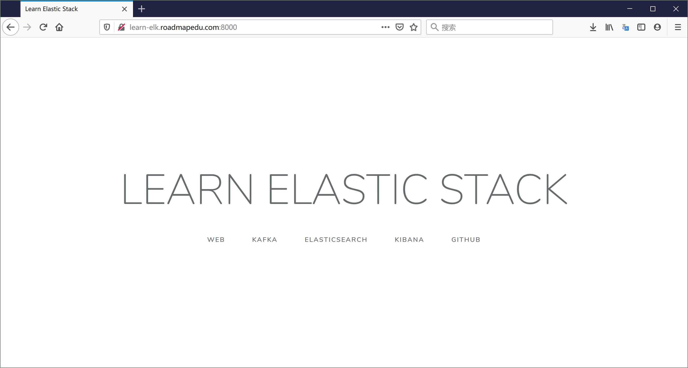

Nginx 访问日志
Nginx 服务配置
在 docker-compose.yaml 对于 Nginx 服务的配置中：
nginx:
image: nginx:1.18
ports:
- "8000:80"
volumes:
- "./nginx/nginx.conf:/etc/nginx/nginx.conf:ro"
- "./nginx/html:/usr/share/nginx/html:ro"
- type: volume
source: nginx-log
target: /var/log/nginx
- 使用 Nginx 1.18 版本的官方镜像，默认使用的镜像仓库地址为： https://hub.docker.com/_/nginx
- 将宿主机的 8000 端口映射到到 Nginx 容器内的 80 端口，这样就可以通过宿主机地址访问容器内服务
- 数据卷映射：
- 将宿主机目录下的配置文件 以及
html目录映射到容器内相应的目录，这样容器内应用就可以访问宿主机上的文件或目录 - 使用宿主机上名为
nginx-log的数据卷，并映射到容器内的/var/log/nginx目录，目的是让运行在同一宿主机上的容器之间共享目录 - Filebeat 容器也会用到
nginx-log数据卷，在这个目录收割 Nginx 访问日志
- 将宿主机目录下的配置文件 以及
Nginx 配置
对于 nginx/nginx.conf 配置：
user nginx;
worker_processes 1;
error_log /var/log/nginx/elk-error.log warn;
pid /var/run/nginx.pid;
events {
worker_connections 1024;
}
http {
include /etc/nginx/mime.types;
default_type application/octet-stream;
log_format main '$remote_addr - $remote_user [$time_local] "$request" '
'$status $body_bytes_sent $request_time "$http_referer" '
'"$http_user_agent" "$http_x_forwarded_for"';
access_log /var/log/nginx/elk-access.log main;
sendfile on;
gzip on;
server {
listen 80;
rewrite ^(.*)$ /index.html;
location / {
root /usr/share/nginx/html;
index index.html index.htm;
}
}
}
通过配置 Nginx 日志格式，可以将每个用户的访问信息记录到日志中，主要包括以下字段：
$remote_addr用户 ip 地址$remote_user用户标识$time_local服务器时间$requesthttp 请求头信息，包括 http method / uri / http 版本$status服务器响应状态码，例如 200/302/404/504$body_bytes_sent服务器响应内容大小(单位 bytes)$request_time请求处理时间$http_referer请求来源 referer$http_user_agent用户系统/浏览器等信息$http_x_forwarded_for网络代理 ip 列表(如果使用代理)
日志示例：
#tail -f /var/log/nginx/elk-access.log
192.168.0.1 - - [26/May/2020:12:31:31 +0000] "GET /api/news/view HTTP/1.0" 404 555 0.000 "-" "Mozilla/5.0 (Macintosh; Intel Mac OS X 10_14_5) AppleWebKit/537.36 (KHTML, like Gecko) Chrome/81.0.4044.138 Safari/537.36" "-"
192.168.0.1 - - [26/May/2020:12:31:32 +0000] "GET /api/app/update HTTP/1.0" 404 555 0.000 "-" "Mozilla/5.0 (Macintosh; Intel Mac OS X 10_14_5) AppleWebKit/537.36 (KHTML, like Gecko) Chrome/81.0.4044.138 Safari/537.36" "-"
192.168.0.1 - - [26/May/2020:12:31:32 +0000] "GET /api/user/login HTTP/1.0" 404 555 0.000 "-" "Mozilla/5.0 (Macintosh; Intel Mac OS X 10_14_5) AppleWebKit/537.36 (KHTML, like Gecko) Chrome/81.0.4044.138 Safari/537.36" "-"
这些日志将被 Filebeat 采集后投递到 Kafka 消息队列，再经过 Logstash 的格式化处理后，索引到 Elasticsearch 中，最后通过 Kibana 可视化查询。
运行效果
